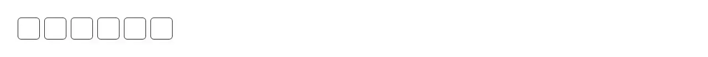

A one-time passcode field split into separate digit boxes — the "enter the 6-digit code we sent you" screen. Reach for it on any challenge step where a short numeric code is typed or pasted: two-factor and multi-factor sign-in (2FA/MFA), an authenticator app's TOTP code, an SMS or phone verification code, an email confirmation code, a magic-link fallback code, account recovery, a step-up check before a payment or a destructive settings change, device or TV pairing, and PIN entry. Common asks it answers: "otp input", "one time password input", "verification code input", "6 digit code input", "enter code boxes", "2fa code field", "sms code input", "confirmation code input", "pin input react", "segmented code input", "react-otp-input alternative", "input-otp alternative", "otp input without dependencies", "shadcn otp input". Official shadcn/ui covers the same screen with input-otp, and the difference is the dependency: that one is a wrapper around the third-party input-otp package (plus lucide-react for its separator), so installing it adds a runtime dependency and hands the caret and paste behaviour to a library. This is the same boxed UI written out in a single file with no dependencies at all — reach for it when the project is keeping its dependency list short, when a package has to be vendored or audited before it can be added, or when you want the behaviour in code you can read and change rather than configure. Digits only, by design: the value is stripped to digits and truncated to `length` (default 6) on every path in, so a controlled parent, a paste and a keystroke cannot disagree about what is in the field. Pasting a full code into any box distributes it across the rest and lands the caret on the last filled one, typing auto-advances, Backspace clears and steps back, and the arrow keys, Home and End move between boxes. The first box carries autocomplete="one-time-code", so iOS and Android offer the code from the incoming SMS, and every box is inputMode="numeric" with pattern="[0-9]*" for a numeric keypad on mobile. Every box is labelled "Digit N of 6" and the group carries a name of its own, so a screen reader user is told where they are instead of hearing six unlabelled text fields. Works controlled (`value` + `onChange`) or uncontrolled (`defaultValue`), fires `onComplete` once when the last box fills — on the fill only, not on every later edit — and forwards a ref to the first box so a page can focus it on mount or from a shortcut. Passing `name` mirrors the joined value into a hidden input, so it posts with a plain HTML form, a Next.js server action, or React Hook Form without a controller. Themed with shadcn tokens, so it follows dark mode.

Rendered on the shadcn default neutral palette with harness-generated props.
pnpm dlx shadcn@4.21.0 add @pulld/otp-input
| licence | POINTER |
|---|---|
| primitive base | none |
| type | registry:ui |
| files | src/components/ui/otp-input.tsx |
| npm deps pulled | none beyond the pre-installed peer set |
| registry deps | — |
| semantic / palette / hex | 2 / 0 / 0 |
| writes shared ui/ | yes — can overwrite the project’s own primitives |